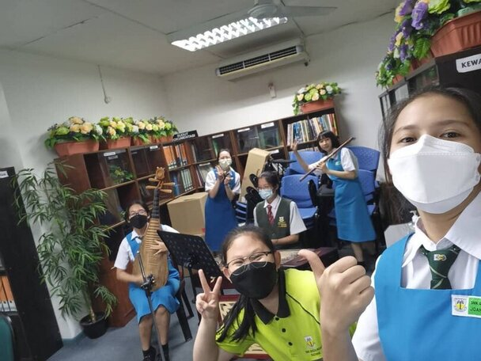

Digital Logic
In this course, I learned about different types of logic gates and how to design a logic circuit. Besides, I also learned about Boolean algebra and De Morgan's Law.
Learn more.png)
First year computer science (data engineering) student in Universiti Teknologi Malaysia (UTM) Johor
Hi, my name is Tay Xin Ying, and I’m 19 years old. I was born in Kuching, Sarawak, and I am currently pursuing a Bachelor of Computer Science in Data Engineering at UTM Johor.

Explore the courses and skills I’ve learned throughout my academic journey.
In this course, I learned about different types of logic gates and how to design a logic circuit. Besides, I also learned about Boolean algebra and De Morgan's Law.
Learn more
A course that gives us knowledge about latest technologies and advancements. Including hardware, software, cybersecurity and etc.
Learn more
This course provided me with a comprehensive understanding of discrete mathematics, covering topics such as set theory, probability, and functions.
Learn more
In this course, I gained a fundamental understanding of C++ programming, including writing C++ programs using VS Code and DEV C++.
Learn moreThis course covers the basic concepts of corruption, including the value of integrity, anti-corruption, forms of corruption, abuse of power in daily and organizational activities, and methods for preventing corruption.
Learn moreBeyond academics, I actively participate in a variety of co-curricular activities.
I have been a dedicated member of the Chinese Orchestra since the age of 13, actively participating in music performances and weekly practices. In Form 2, I took on my first committee role as the leader of the woodwind group. This position honed my leadership skills significantly as I guided group members and resolved challenges within the team. Beyond the orchestra, I served as the secretary of the Chinese Club and joined The Federation of Chinese Language Societies of Kuching, Samarahan, and Serian Divisions, Sarawak. These roles provided me with valuable experience in organizing a variety of activities and even leading as the chairman of a competition. During my matriculation period, I further expanded my organizational expertise as the vice secretary of the Chinese Association of Labuan Matriculation College. These diverse experiences have strengthened my abilities in leadership, communication, and problem-solving.
Performance for a teacher's retirement ceremony

Chinese Association of Labuan Matriculation College Committee 2023/2024
During my secondary and matriculation years, I actively participated in various competitions. My first notable achievement was in 2021 when I earned a consolation prize in the Sarawak state-level Mathematics Olympiad competition, competing against top students from across the state. In 2023, during my matriculation, I participated in the Matriculation STEM Carnival (MASCAR) alongside my friends. Our innovation, the QuantifyPro Scale, won us a gold medal in the STEM Creator competition. Building on this success, we enhanced the QuantifyPro Scale and entered it into the Pre-University Matriculation Innovation Competition (PIITRAM) in 2024, where we secured another gold medal. Through these experiences, I acquired valuable technical skills, such as coding and soldering, which have further fueled my passion for innovation and problem-solving.

MASCAR 2023

PIITRAM 2024
Feel free to click the button below for my resume :>